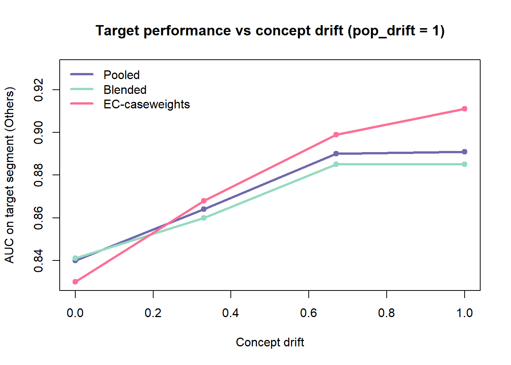
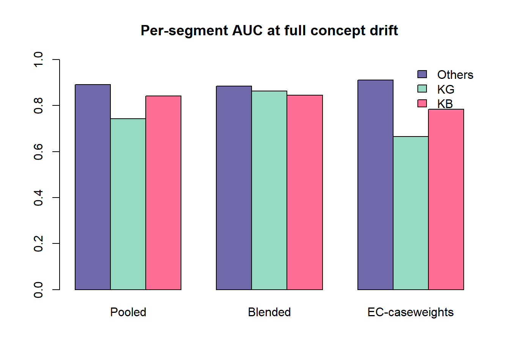

library(stats)
set.seed(1)
# true (shared) risk relationship; sign: + => riskier
beta <- c(util = 0.90, inq = 0.50, trades = -0.40, age = -0.50,
delinq = 0.80, dpd = 0.60, bal = 0.30, thin = 0.40)
feat_names <- names(beta)
# per-segment feature means at FULL population drift
seg_mean_full <- rbind(
KG = c(-0.60, -0.40, 0.60, 0.70, -0.50, -0.50, 0.10, -0.80),
KB = c( 0.90, 0.60, -0.10, -0.20, 1.00, 1.00, 0.30, -0.30),
Others = c( 0.10, 0.50, -0.70, -0.80, 0.10, 0.00, -0.40, 1.20))
colnames(seg_mean_full) <- feat_names
segments <- rownames(seg_mean_full)
mix <- c(KG = 0.45, KB = 0.15, Others = 0.40) # population shares
base_full <- c(KG = 0.03, KB = 0.35, Others = 0.12) # bad rates at full drift
base_common <- 0.12 # common rate at zero drift
solve_intercept <- function(eta0, target)
uniroot(function(c0) mean(plogis(c0 + eta0)) - target,
c(-12, 12), extendInt = "yes")$root
gen_population <- function(seed, pop_drift, concept_shift, n = 6000) {
set.seed(seed)
seg <- sample(segments, n, TRUE, prob = mix[segments])
seg_mean <- seg_mean_full * pop_drift
base_bad <- base_common + pop_drift * (base_full - base_common)
set.seed(seed + 7)
beta_seg <- lapply(segments, function(s)
beta + concept_shift * rnorm(length(beta)) * abs(beta))
names(beta_seg) <- segments
X <- matrix(0, n, length(feat_names), dimnames = list(NULL, feat_names))
for (s in segments) {
idx <- which(seg == s); if (!length(idx)) next
blk <- matrix(rnorm(length(idx) * length(feat_names)), length(idx),
dimnames = list(NULL, feat_names))
blk <- sweep(blk, 2, seg_mean[s, ], "+")
blk[, "thin"] <- as.numeric(blk[, "thin"] > 0.5) # thin = binary flag
X[idx, ] <- blk
}
eta <- numeric(n)
for (s in segments) { idx <- which(seg == s); eta[idx] <- as.vector(X[idx, ] %*% beta_seg[[s]]) }
for (s in segments) { idx <- which(seg == s); eta[idx] <- eta[idx] + solve_intercept(eta[idx], base_bad[s]) }
data.frame(segment = factor(seg, levels = segments),
y = rbinom(n, 1, plogis(eta)), X, check.names = FALSE)
}One Model or Many? Pooling, Blending, and Error Correction Across Segments
R
Credit Risk Analytics
Segmentation
Simulation
A recurring question that credit risk modelers face is how to build models that generalise across populations — say known goods, known bads, and a messy others bucket. Do you pool everything into one model? Build a model per segment and blend them? Or train a base model and bolt on a correction layer for the segment you care about?
This post delves into these questions using a synthetic credit dataset where we can dial two kinds of drift between segments and then applies three strategies across that grid to see exactly when each one wins.
The setup
Three segments, each with a binary default target and a standard set of bureau predictors (utilisation, inquiries, tradelines, history length, delinquencies etc.). The population we want to target is KG but need the model to perform relatively well on KB and Others as well.
We’ll build two levers that control how the segments differ:
- Population drift: how far apart segments sit in feature distribution and base default rate. At zero, the three segments are almost identical; at one, they are fully separated.
- Concept drift: how much the feature → default relationship changes between segments (controlled via coefficients). At zero, every segment obeys the same risk equation; at one, each segment’s coefficients are strongly perturbed.
This distinction matters because population drift is something a single model can absorb (with an intercept or a dummy), whereas concept drift means no single set of coefficients is right for everyone - which is when segment-specific machinery should pay off.
The three strategies:
| Strategy | # Models | Idea |
|---|---|---|
| Pooled | 1 | One logistic regression on all segments. |
| Blended | 3 | One model per segment, combined by out-of-fold weights. |
| Error Correction using caseweights | 2 | Base model on KG+KB, then refit upweighting misclassified Others rows. The misclassification threshold is tuned, not fixed at 0.5. |
Generating the data
The generator below assigns each row a segment, shifts that segment’s feature means and base rate by pop_drift, perturbs its coefficients by concept_shift, then calibrates a per-segment intercept so the marginal default rate hits its target.
A quick look at what the knobs do — at full population drift the segments separate cleanly on bad rate:
d <- gen_population(1, pop_drift = 1, concept_shift = 0)
round(tapply(d$y, d$segment, mean), 3) KG KB Others
0.034 0.350 0.127 Metrics and helpers
We score with AUC (rank-based) and KS, and use a small wrapper around glm so we can pass weights and offsets cleanly.
auc <- function(s, y) {
if (length(unique(y)) < 2) return(NA_real_)
r <- rank(s, ties.method = "average"); n1 <- sum(y == 1); n0 <- sum(y == 0)
(sum(r[y == 1]) - n1 * (n1 + 1) / 2) / (n1 * n0)
}
ks <- function(s, y) {
if (length(unique(y)) < 2) return(NA_real_)
o <- order(s); max(abs(cumsum(y[o] == 1)/sum(y == 1) - cumsum(y[o] == 0)/sum(y == 0)))
}
pr <- function(m, nd) as.vector(predict(m, nd, type = "response"))
fml <- as.formula(paste("y ~", paste(feat_names, collapse = " + ")))
qglm <- function(formula, data, weights) {
cl <- list(quote(stats::glm), formula = formula, family = quote(binomial()))
if (!missing(data)) cl$data <- data
if (!missing(weights)) cl$weights <- weights
suppressWarnings(eval(as.call(cl), parent.frame()))
}
strat_idx <- function(seg, frac, seed) {
set.seed(seed)
unlist(lapply(segments, function(s){ i <- which(seg == s); sample(i, floor(frac * length(i))) }))
}The three strategies
Pooled is one line. Blended fits a model per segment and learns how to combine them with out-of-fold stacking, so the blend weights are chosen on held-out predictions rather than in-sample. EC-caseweights trains a base model on the labelled KG+KB populations, finds the Others rows that base model gets wrong, and refits the pooled model with extra weight on those — and crucially it tunes the threshold that defines “wrong” on a validation slice instead of assuming 0.5.
# 1. Pooled ------------------------------------------------------------------
m_pooled <- function(train, test) pr(qglm(fml, data = train), test)
# 2. Blended: per-segment models + out-of-fold logistic stacking -------------
m_blended <- function(train, test, K = 3) {
set.seed(11); fold <- sample(rep_len(1:K, nrow(train)))
oof <- matrix(NA, nrow(train), length(segments), dimnames = list(NULL, segments))
for (k in 1:K) {
tr <- train[fold != k, ]; ho <- which(fold == k)
for (s in segments) {
dd <- tr[tr$segment == s, ]
if (length(unique(dd$y)) == 2) oof[ho, s] <- pr(qglm(fml, data = dd), train[ho, ])
}
}
ok <- complete.cases(oof)
meta <- qglm(train$y[ok] ~ oof[ok, ]) # learn optimal weights
full <- sapply(segments, function(s){ dd <- train[train$segment == s, ]
if (length(unique(dd$y)) == 2) pr(qglm(fml, data = dd), test) else rep(mean(dd$y), nrow(test)) })
cf <- coef(meta); cf[is.na(cf)] <- 0
as.vector(plogis(cf[1] + full %*% cf[-1]))
}
# 3. EC-caseweights with TUNED misclassification threshold -------------------
m_ec <- function(train, test, cw_mult = 4, thr_grid = seq(0.10, 0.90, 0.20)) {
is_t <- train$segment == "Others"; src <- train[!is_t, ]
# tune threshold on a validation split
vi <- strat_idx(train$segment, 0.30, 77)
fit <- train[-vi, ]; val <- train[vi, ]
bfit <- qglm(fml, data = fit[fit$segment != "Others", ])
ot <- fit$segment == "Others"; p_ot <- pr(bfit, fit[ot, ]); vo <- val$segment == "Others"
score_t <- function(t) {
mis <- as.numeric((p_ot > t) != (fit$y[ot] == 1))
w <- rep(1, nrow(fit)); w[ot] <- 1 + (cw_mult - 1) * mis
auc(pr(qglm(fml, data = fit, weights = w), val[vo, ]), val$y[vo])
}
aucs <- sapply(thr_grid, function(t) tryCatch(score_t(t), error = function(e) NA))
t_best <- thr_grid[which.max(aucs)]
# final fit on full train at tuned threshold
base <- qglm(fml, data = src); p_o <- pr(base, train[is_t, ])
mis <- as.numeric((p_o > t_best) != (train$y[is_t] == 1))
w <- rep(1, nrow(train)); w[is_t] <- 1 + (cw_mult - 1) * mis
list(p = pr(qglm(fml, data = train, weights = w), test), t = t_best)
}Racing them across the drift grid
For each combination of population drift and concept drift we simulate several populations, hold out a stratified test set, and record AUC on each segment. We track the target (Others) plus KG and KB so we can see the generalisation cost.
pop_grid <- c(0.00, 0.33, 0.67, 1.00)
concept_grid <- c(0.00, 0.33, 0.67, 1.00)
methods <- c("Pooled", "Blended", "EC-caseweights")
n_reps <- 6
run_cell <- function(pd, cs) {
agg <- setNames(lapply(methods, function(m) data.frame()), methods); tsel <- c()
for (rep in seq_len(n_reps)) {
dat <- gen_population(100 + rep, pd, cs)
te_i <- strat_idx(dat$segment, 0.30, 1100 + rep)
train <- dat[-te_i, ]; test <- dat[te_i, ]
oth <- test$segment == "Others"; kg <- test$segment == "KG"; kb <- test$segment == "KB"
preds <- list(Pooled = m_pooled(train, test), Blended = m_blended(train, test))
ec <- m_ec(train, test); preds[["EC-caseweights"]] <- ec$p; tsel <- c(tsel, ec$t)
for (m in methods)
agg[[m]] <- rbind(agg[[m]], data.frame(
Others = auc(preds[[m]][oth], test$y[oth]),
KG = auc(preds[[m]][kg], test$y[kg]),
KB = auc(preds[[m]][kb], test$y[kb])))
}
do.call(rbind, lapply(methods, function(m) data.frame(
pop_drift = pd, concept_shift = cs, Method = m,
AUC_Others = round(mean(agg[[m]]$Others), 3),
AUC_KG = round(mean(agg[[m]]$KG), 3),
AUC_KB = round(mean(agg[[m]]$KB), 3),
tuned_thr = if (m == "EC-caseweights") round(mean(tsel), 2) else NA)))
}
res <- do.call(rbind, lapply(pop_grid, function(pd)
do.call(rbind, lapply(concept_grid, function(cs) run_cell(pd, cs)))))
head(res, 6) pop_drift concept_shift Method AUC_Others AUC_KG AUC_KB tuned_thr
1 0 0.00 Pooled 0.838 0.831 0.829 NA
2 0 0.00 Blended 0.837 0.830 0.827 NA
3 0 0.00 EC-caseweights 0.837 0.826 0.827 0.60
4 0 0.33 Pooled 0.859 0.826 0.830 NA
5 0 0.33 Blended 0.856 0.828 0.827 NA
6 0 0.33 EC-caseweights 0.864 0.803 0.825 0.53What wins where
First, the target-segment AUC for each method, laid out as population drift (rows) by concept drift (columns):
pivot <- function(method) {
M <- matrix(NA, length(pop_grid), length(concept_grid),
dimnames = list(paste0("pop=", pop_grid), paste0("con=", concept_grid)))
for (i in seq_along(pop_grid)) for (j in seq_along(concept_grid)) {
r <- res[res$pop_drift == pop_grid[i] & res$concept_shift == concept_grid[j] & res$Method == method, ]
M[i, j] <- r$AUC_Others
}
M
}
lapply(setNames(methods, methods), pivot)$Pooled
con=0 con=0.33 con=0.67 con=1
pop=0 0.838 0.859 0.868 0.869
pop=0.33 0.839 0.862 0.875 0.877
pop=0.67 0.837 0.864 0.887 0.888
pop=1 0.840 0.864 0.890 0.891
$Blended
con=0 con=0.33 con=0.67 con=1
pop=0 0.837 0.856 0.867 0.876
pop=0.33 0.839 0.858 0.871 0.879
pop=0.67 0.837 0.859 0.883 0.886
pop=1 0.841 0.860 0.885 0.885
$`EC-caseweights`
con=0 con=0.33 con=0.67 con=1
pop=0 0.837 0.864 0.897 0.921
pop=0.33 0.838 0.864 0.896 0.918
pop=0.67 0.832 0.866 0.899 0.917
pop=1 0.830 0.868 0.899 0.911Two things jump out. Reading down any column (increasing population drift) the numbers barely move — a single model soaks up distribution and base-rate differences without trouble. Reading across any row (increasing concept drift) is where the methods separate, and only EC-caseweights climbs meaningfully.
The crossover is clearest in a plot. Fixing population drift at its maximum, here is target AUC as concept drift increases:
pal <- c(Pooled = "#6F69AC", Blended = "#95DAC1", `EC-caseweights` = "#FD6F96")
sub <- res[res$pop_drift == 1.00, ]
plot(NA, xlim = range(concept_grid), ylim = c(0.83, 0.93),
xlab = "Concept drift", ylab = "AUC on target segment (Others)",
main = "Target performance vs concept drift (pop_drift = 1)")
for (m in methods) {
d <- sub[sub$Method == m, ]
lines(d$concept_shift, d$AUC_Others, col = pal[m], lwd = 3)
points(d$concept_shift, d$AUC_Others, col = pal[m], pch = 19)
}
legend("topleft", legend = methods, col = pal[methods], lwd = 3, bty = "n")
With no concept drift the three lines sit on top of each other near 0.85 — the extra models buy nothing. As concept drift grows, EC-caseweights pulls clear of the pack while Pooled and Blended stay flat.
The catch: generalisation cost
Winning on the target is only half the brief — we also wanted to hold up on KG and KB. Here is the picture at full concept drift, where EC looked best:
worst <- res[res$pop_drift == 1.00 & res$concept_shift == 1.00,
c("Method", "AUC_Others", "AUC_KG", "AUC_KB", "tuned_thr")]
worst Method AUC_Others AUC_KG AUC_KB tuned_thr
46 Pooled 0.891 0.743 0.841 NA
47 Blended 0.885 0.863 0.845 NA
48 EC-caseweights 0.911 0.666 0.784 0.57M <- t(as.matrix(worst[, c("AUC_Others", "AUC_KG", "AUC_KB")]))
colnames(M) <- worst$Method
barplot(M, beside = TRUE, ylim = c(0, 1),
col = c("#6F69AC", "#95DAC1", "#FD6F96"),
legend.text = c("Others", "KG", "KB"),
args.legend = list(x = "topright", bty = "n"),
main = "Per-segment AUC at full concept drift")
EC-caseweights buys its target lift by sacrificing the other segments — KG and KB discrimination drop sharply because the reweighting bends the model toward Others’ hard cases. Blended, by contrast, holds KG and KB up the best of any method, since each segment keeps its own dedicated model; it just never wins outright on the target. Note too that the tuned EC threshold is not 0.5 — it drifts as the segments diverge, which is why tuning it rather than hard-coding 0.5 matters.
Takeaways
The grid collapses to a fairly clean decision rule:
- No concept drift (whatever the population drift): use one Pooled model. The strategies are within noise of each other, so the extra models and tuning are wasted effort. If you want segment-aware intercepts for free, a population indicator inside the pooled model handles base-rate differences without adding a model.
- Concept drift present, and Others is the only thing that matters: use EC-caseweights with a tuned threshold. It delivers the best target AUC, accepting that KG and KB will degrade.
- Concept drift present, but you need the other segments to stay healthy: use Blended. It is the only option that lifts the target while keeping KG and KB strong — at the cost of maintaining three models.
The broader lesson is that the kind of heterogeneity between your populations, not the amount, decides the architecture. Distribution and base-rate differences are cheap to absorb; differences in the underlying risk relationship are what justify segment-specific models or correction layers. Before reaching for a more complex setup, it is worth checking — on your own data — whether the segments actually disagree on coefficients, or merely on means. The simulation above is a template for exactly that check: swap in your segment definitions and shift parameters, and read off which region of the grid you live in.